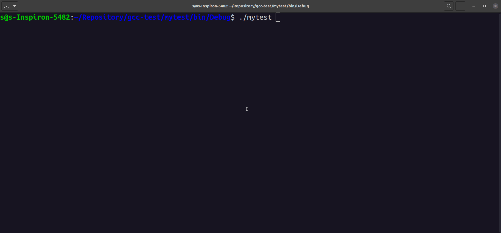
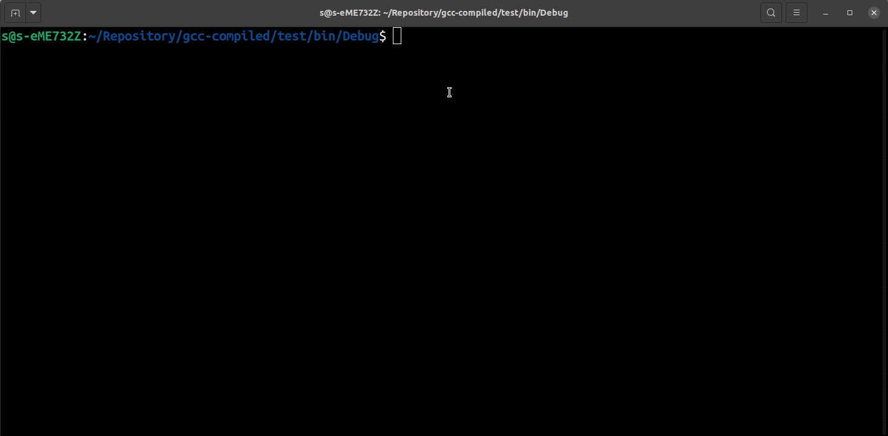
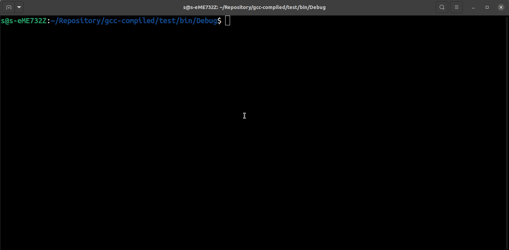
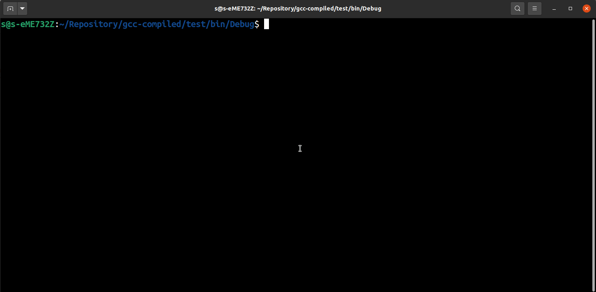
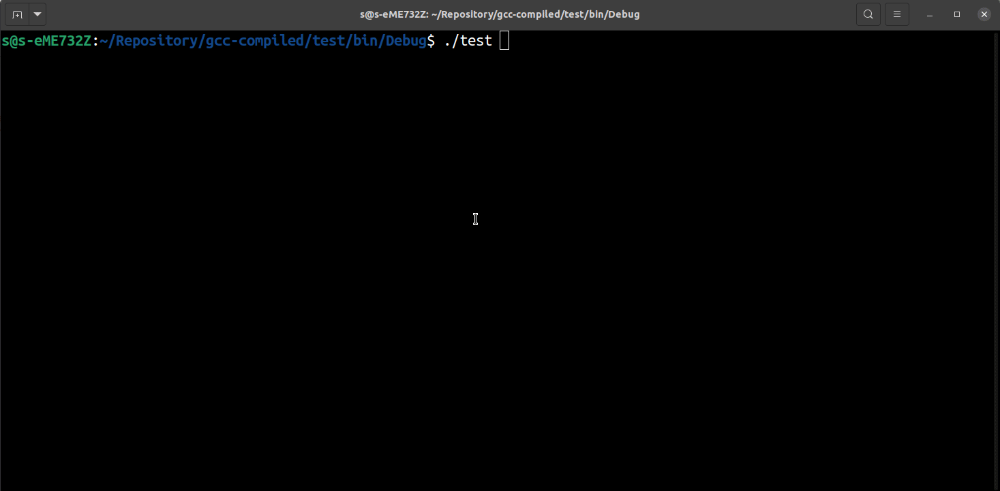

C++ per esempi
Raccolta di esempi in C++ ordinati secondo difficoltà
Area e perimetro di un rettangolo
Restituisce area e perimetro di un rettangolo dati base e altezza immessi da tastiera
#include <iostream>
using namespace std;
int main()
{
cout << "Title: Area e perimetro di un rettangolo" << '\n'
<< "Description: Restituisce area e perimetro di un rettangolo dati base e altezza immessi da tastiera" << '\n';
double base, altezza, perimetro, area;
cout << '\n' << "base:";
cin >> base;
cout << "altezza:";
cin >> altezza;
perimetro = 2 * ( base + altezza ); //Conversione implicita 2 -> 2.0
area = base * altezza;
cout << '\n' << "Perimetro: " << perimetro
<< '\n' << "Area: " << area << '\n';
}
Da intero a decine centinaia e unita'
Acquisisce un numero intero positivo minore o uguale a 999 immesso da tastiera e stampa la scomposizione in centinaia, decine, unita'.
Modo 1: Uso del costrutto if ... else
#include <iostream>
using namespace std;
int main ()
{
cout << "Title: Da intero a decine centinaia e unita'" << '\n'
<< "Description: Acquisisce un numero intero positivo minore o uguale a 999 immesso da tastiera e stampa la scomposizione in centinaia, decine, unita'" << '\n';
int numero, centinaia, decine, unita;
cout << '\n' << "Inserisci un numero positivo minore o uguale a 999."
<< '\n' << "Numero:";
cin >> numero;
if ( ( numero < 0 ) || ( numero > 999 ) )
cout << '\n' << "Numero non valido";
else
{
unita = numero % 10;
decine = ( numero / 10 ) % 10;
centinaia = numero / 100;
cout << '\n' << "centinaia:" << centinaia
<< '\n' << "decine:" << decine
<< '\n' << "unita':" << unita
<< '\n';
}
}
Modo 2 Uso del ternary operator ... ? ... : ...
#include <iostream>
using namespace std;
int main ()
{
cout << "Title: Da intero a decine centinaia e unita'" << '\n'
<< "Description: Acquisisce un numero intero positivo minore o uguale a 999 immesso da tastiera e stampa la scomposizione in centinaia, decine, unita'" << '\n';
int numero, centinaia, decine, unita;
cout << '\n' << "Inserisci un numero positivo minore o uguale a 999."
<< '\n' << "Numero:";
cin >> numero;
//Forzo i numeri maggiori 999 a 999 e i numeri minori di 0 a 0.
numero = ( numero > 0) ? ( numero < 999 ? numero : 999 ) : 0;
unita = numero % 10;
decine = ( numero / 10 ) % 10;
centinaia = numero / 100;
cout << '\n' << "centinaia:" << centinaia
<< '\n' << "decine:" << decine
<< '\n' << "unita':" << unita;
<< '\n';
}
Negativo, nullo o positivo?
Acquisisce un numero intero da tastiera e stampa se è negativo, nullo o positivo
Modo 1: Uso del costrutto if ... else
#include <iostream>
using namespace std;
int main ()
{
cout << "Title: Negativo, nullo o positivo?" << '\n'
<< "Description: Acquisisce un numero intero da tastiera e stampa se è negativo, nullo o positivo" << '\n';
int numero;
cout << '\n' << "Inserisci un numero intero." << '\n'
<< "Numero:";
cin >> numero;
if ( numero < 0 )
cout << '\n' << "Negativo.";
else if ( numero == 0 )
cout << '\n' << "Nullo.";
else
cout << '\n' << "Positivo.";
cout << '\n';
}
Modo 2: Uso del ternary operator ... ? ... : ...
#include <iostream>
using namespace std;
int main ()
{
cout << "Title: Negativo, nullo o positivo?" << '\n'
<< "Description: Acquisisce un numero intero da tastiera e stampa se è negativo, nullo o positivo" << '\n';
int numero;
cout << '\n' << "Inserisci un numero intero." << '\n'
<< "Numero:";
cin >> numero;
( numero == 0 ) ? ( cout << '\n' << "Nullo." ) : ( (numero > 0) ? (cout << '\n' << "Positivo.") : (cout << '\n' << "Negativo.") );
cout << '\n';
}

Pari o Dispari?
Acquisisce un numero intero da tastiera e stampa se è pari o dispari
# include <iostream>
using namespace std;
int main(){
cout << "Ttitle: Pari o dispari?" << '\n'
<< "Description: Acquisisce un numero intero da tastiera e stampa se è pari o dispari\n";
int n;
cout << "Inserisci un numero:";
cin >> n;
(n%2) ? (cout << "Dispari.") : (cout << "Pari.");
cout << '\n';
}

Uguali ?
Acquisisce tre numeri interi da tastiera e stampa se sono uguali
#include <iostream>
using namespace std;
int main(){
cout << "Title: Uguali ?\n"
<< "Acquisisce tre numeri interi da tastiera e stampa se sono uguali\n";
int n1, n2, n3;
cout << "Inserisci tre numeri interi." << '\n';
cout << '\n' << "n1:";
cin >> n1;
cout << "n2:";
cin >> n2;
cout << "n3:";
cin >> n3;
if ( (n1 == n2) && (n2 == n3) )
cout << '\n' << "Tutti uguali.";
else if ( (n1 == n2) || (n1 == n3) || (n2 == n3) )
cout << '\n' << "Due uguali.";
else
cout << '\n' << "Diversi.";
cout << '\n';
}
Da intero a carattere
Acquisisce un numero intero da tastiera e lo converte in un carattere stampabile
#include <iostream>
using namespace std;
int main(){
cout << "Title: Da intero a carattere\n"
<< "Description: Acquisisce un numero intero da tastiera e lo converte in un carattere stampabile\n";
int i;
cout << "insercisci un numero:";
cin >> i;
//Se minore di 31 o maggiore di 127 forza a 32.
i = ( (i < 32) || (i > 127) ) ? (i=32) : i;
cout << char(i);
cout << '\n';
}

Da carattere a intero
Acquisisce un carattere da tastiera e lo converte nel corrispondente codice ASCII
#include <iostream>
using namespace std;
int main(){
cout << "Title: Da carattere a intero\n"
<< "Description: Acquisisce un carattere da tastiera e lo converte nel corrispondente codice ASCII\n";
char c;
cout << "Inserisci un carattere: ";
cin >> c;
if ( ( (c >= 'a') && (c <= 'z') ) || ( (c >= 'A') && (c <= 'Z') ) )
cout << "\nCodisce ASCII: " << int(c);
else
cout << "\nNon e' una lettera dell'alfabeto.";
cout << '\n';
}

Da minuscolo a maiuscolo
Acquisisce un carattere letterale minuscolo da tastiera e lo converte in un carattere letterale maiuscolo
#include <iostream>
using namespace std;
//0100 0000 -> MAIUSC
//0110 0000 -> min
//Devo mettere a 0 il quinto bit. Quindi min = (xx1x xxxx) & (1101 1111);
// 1101 1111 --> = ~(1<<5)
// ATT:
// 1<<5 = 0010 0000
// ~(1<<5) = 1101 1111
int main() {
cout << "Title: Da minuscolo a maiuscolo\n"
<< "Description: Acquisisce un carattere letterale minuscolo da tastiera e lo converte in un carattere letterale maiuscolo\n";
char c;
cout << "Inserisci un carattere minuscolo: ";
cin >> c;
c &= ~( 1 << 5 );
cout << "Il carattere maiuscolo e': " << c;
cout << '\n';
}
Da maiuscolo a minuscolo
Acquisisce un carattere letterale maiuscolo da tastiera e lo converte in un carattere letterale minuscolo
#include <iostream>
using namespace std;
//0100 0000 -> MAIUSC
//0110 0000 -> min
//Devo mettere a 1 il quinto bit. Quindi min = (xx1x xxxx) | (0010 0000);
// 0010 0000 --> = (1<<5)
int main() {
cout << "Title: Da maiuscolo a minuscolo\n"
<< "Description: Acquisisce un carattere letterale maiuscolo da tastiera e lo converte in un carattere letterale minuscolo\n";
char c;
cout << "Inserisci un carattere MAIUSCOLO: ";
cin >> c;
c |= ( 1 << 5 );
cout << "Il carattere minuscolo e': " << c;
cout << '\n';
}
Da minuscolo a maiuscolo e viceversa
Acquisisce un carattere letterale da tastiera e: - Lo converte in maiuscolo se è minuscolo - Lo converte in minuscolo se è maiuscolo - Restituisce il carattere se non è una lettera
#include <iostream>
using namespace std;
//010x xxxx -> MAIUSC
//011x xxxx -> minusc
//La lettera 'k' differisce di 2^5 rispetto alla lettera 'K'
//Calcolo 'a' - 'A'
int main (){
cout << "Title: Da minuscolo a maiuscolo e viceversa\n"
<< "Description: Acquisisce un carattere letterale da tastiera e:\n"
<< "- Lo converte in maiuscolo se è minuscolo\n"
<< "- Lo converte in minuscolo se è maiuscolo\n"
<< "- Restituisce il carattere se non è una lettera\n";
char c;
cout << "Inserisci un carattere: ";
cin >> c;
const int t = 'a' - 'A'; //Costante di conversione min<->MAIUSC
if ( c >= 'a' && c <= 'z' ){
c -= t; //Trasformo min->MAIUSC
cout << "Il carattere maiuscolo e': " << c;
}
else if ( c >= 'A' && c <= 'Z' ){
c += t; //Trasformo MAIUSC-min
cout << "Il carattere minuscolo e': " << c;
}
else
cout << "Il carattere inserito e': " << c;
cout << '\n';
}

Risolvi equazioni di II grado
Calcola i risultati di un equazione di secondo grado del tipo:
ax^2 + bx + c = 0
Inserendo da tastiera i valori dei coefficienti a, b, c
#include <iostream>
#include <cmath>
using namespace std;
int main (){
cout << "Ttile: Risolvi equazioni di II grado\n"
<< "Description: Calcola i risultati di un equazione di secondo grado del tipo:\n"
<< "ax^2 + bx +c = 0\n"
<< "Inserendo da tastiera i valori dei coefficienti a, b, c\n";
double a,b,c, x1, x2, delta;
cout << "\nInserisci i coefficienti a, b, c.\n\n";
cout << "a:";
cin >> a;
cout << "b:";
cin >> b;
cout << "c:";
cin >> c;
if ( (a==0) && (b==0) && (c==0) )
cout << "\nEquazione DEGENERE.";
else if ( (a==0) && (b==0) )
cout << "\nEquazione IMPOSSIBILE.";
else if (a==0)
{
cout << "\nEquazione di PRIMO grado.";
x1 = -b/c;
cout << "\nx=" << x1;
}
else
{
delta = b*b - 4*a*c;
if ( delta < 0 )
cout << "\nx1, x2, soluzioni immaginarie.\n";
else if ( delta == 0)
{
x1 = -b/(2*a);
cout << "\nx1=x2=" << x1;
}
else
{
cout << "\nSoluzioni reali e distinte.\n";
x1 = ( -b + sqrt(delta) )/ ( 2 * a );
x2 = ( -b - sqrt(delta) )/ ( 2 * a );
cout << "\nx1:" << x1 << "\nx2:" << x2;
}
}
cout << '\n';
}

Conta dispari da sequenza illimitata
Conta i numeri dispari inseriti da tastiera. Termina al primo negativo o nullo
Modo 1: Uso del ciclo while()
#include <iostream>
using namespace std;
/*
NOTA:
- Lo statemeant: conta += n%2;
- Equivake a: conta = conta + n%2;
- Equivale a: if ( n%2 ) conta++;
*/
int main (){
cout << "Title: Conta dispari"
<< "Description: Conta i numeri dispari inseriti da tastiera. Termina al primo negativo o nullo.\n";
int n, conta = 0;
cout << "n: ";
cin >> n;
while ( n > 0 ){
conta += n % 2;
cout << "n: ";
cin >> n;
}
cout << conta;
cout << '\n';
}
Modo 2: Uso del ciclo for(;;)
#include <iostream>
using namespace std;
/*
NOTA:
- Lo statemeant: conta += n%2;
- Equivake a: conta = conta + n%2;
- Equivale a: if ( n%2 ) conta++;
*/
int main (){
cout << "Title: Conta dispari\n"
<< "Description: Conta i numeri dispari inseriti da tastiera. Termina al primo negativo o nullo.\n";
int n, conta = 0;
cout << "n: ";
cin >> n;
for (;;)
{
if ( n>0 )
{
conta += n % 2;
cout << "n: ";
cin >> n;
}
else
break;
}
cout << conta;
cout << '\n';
}

Stampa cifre
Stampa le cifre di un numero intero inserito da tastiera a partire da quella meno significativa.
#include <iostream>
using namespace std;
int main(){
cout << "Title: Stampa cifre\n"
<< "Description: Stampa le cifre di un numero intero inserito da tastiera a partire da quella meno significativa.\n";
int n;
cout << "Inserisci un numero intero\n";
cin >> n;
n = ( n > 0 ) ? n : -n;
cout << "Cifre:\n";
do {
cout << '>' << n%10 << '\n';
n /= 10;
} while ( n>0 );
cout << '\n';
}

Tavola pitagorica
Costruisce la tavola pitagorica dato l'ordine "n" immesso da tastiera.
#include <iostream>
using namespace std;
int main(){
cout << "Title: Tavola pitagorica"
<< "Description: Costruisce la tavola pitagorica dato l'ordine 'n' immesso da tastiera.\n";
int n;
cout << "Inserisci l'ordine 'n' della tavola pitagorica:";
cin >> n;
cout << '\n';
n = n < 1 ? 1 : n;
for ( int i=1; i <= n; i++ ){
for ( int j = 1; j <= n; j++ )
cout << i*j << '\t';
cout << "\n\n\n";
}
cout << '\n';
}

Conta dispari da sequenza limitata
Riceve una sequenza di numeri da tastiera e conta i dispari. Termina anche se un numero inserito è nullo o negativo
#include <iostream>
using namespace std;
int main(){
cout << "Title: Conta dispari da sequenza limitata"
<< "Description: Riceve una sequenza di numeri da tastiera e conta i dispari. Termina anche se un numero inserito è nullo o negativo\n";
int M, n, conta = 0;
cout << "Inserisci il numero di elementi della sequenza:";
cin >> M;
cout << "\nInserisci la sequenza:\n";
cin >> n;
conta += n % 2;
for ( int i = 1; ( i < M ) && ( n > 0 ); i++ ){
cin >> n;
conta += n % 2;
}
cout << "\nI numeri dispari della sequenza sono:" << conta;
cout << '\n';
}
Sequenza crescente, decrescente o non ordinata?
Riceve da tastiera una sequenza di numeri interi e calcola se la sequenza è ordinata in modo crescente, decrescente o non ordinata
#include <iostream>
using namespace std;
int main(){
cout << "Title: Sequenza crescente, decrescente o non ordinata?\n"
<< "Description: Riceve da tastiera una sequenza di numeri interi e calcola se la sequenza è ordinata in modo crescente, decrescente o non ordinata\n";
int n, n1, n2, crescente = 0, decrescente = 0, uguale = 0;
cout << "Immetti la Lunghezza della sequenza numerica:";
cin >> n;
cout << "\nImmetti la sequenza:\n";
cin >> n1;
for ( int i = 1; ( i < n ) ; i++ ){
cin >> n2;
crescente += n2 > n1;
decrescente += n2 < n1;
uguale += n2 == n1;
n1 = n2;
}
if ( crescente == n-1 )
cout << "CRESCENTE";
else if ( decrescente == n-1 )
cout << "DECRESCENTE";
else if ( uguale == n-1 )
cout << "UGUALE.";
else
cout << "NON ORDINATA.";
cout << '\n';
}

Vettore palindromo
Calcola se il vettore immesso da tastiera è palindromo
#include <iostream>
using namespace std;
void riempi ( int*, int );
void stampa ( int*, int );
int palindromo ( int*, int );
int main(){
cout << "Title: Vettore palindromo"
<< "Description: Calcola se il vettore immesso da tastiera è palindromo\n";
int nElem;
cout << "Dimensione del vettore: ";
cin >> nElem;
nElem = ( nElem < 1 ) ? 1 : nElem;
int *vett = new int[nElem];
riempi( vett, nElem );
stampa ( vett, nElem );
if ( palindromo ( vett, nElem ) )
cout << "Vettore palindromo.";
else
cout << "Vettore non palindromo.";
cout << '\n';
}
void riempi ( int *v, int n ){
for (int i = 0; i < n; i++){
cout << "Elemento " << i+1 << ": ";
cin >> v[i]; //v[i] = *(v+i)
}
}
void stampa ( int *v, int n ){
cout << "\n[" << n << "] <" << v[0];
for ( int i = 1; i < n; i++)
cout << ", " << v[i]; //v[i] = *(v+i)
cout << ">\n";
}
int palindromo ( int *v, int n ){
for ( int i = 0, j = n-1; i < j; i++, j--){
if ( v[i] != v[j] ) //v[i] != v[j] -> *(v+i) != *(v+j)
return 0;
}
return 1;
}
Conta ricorrenza numerica
Conta la ricorrenza delle cifre 0-9 presenti nella sequenza inserita da tastiera
#include <iostream>
using namespace std;
void azzera ( int*, int);
void conta ( int*, int);
void stampa ( int*, int);
int main(){
cout << "Title: Conta ricorrenza numerica\n"
<< "Description: Conta la ricorrenza delle cifre 0-9 presenti nella sequenza inserita da tastiera.\n";
int LunghSeq, nElem = 10;
int vettConta[nElem]; //Vettore conteggio cifre.
azzera ( vettConta, nElem );
cout << "Lunghezza sequenza: ";
cin >> LunghSeq;
cout << "Inserisci la sequenza:\n";
conta ( vettConta, LunghSeq );
stampa ( vettConta, nElem );
cout << '\n';
}
void azzera ( int *v, int n ){
for ( int i = 0; i < n; i++ )
v[i] = 0;
}
void conta ( int *v, int l ){
int num;
for (int i = 0; i < l; i++ ){
cin >> num;
num = ( num >= 0) ? num : -num; //Controllo sul segno.
do{
v[ num % 10 ]++;
num = num / 10;
} while ( num > 0 );
}
}
void stampa ( int *v, int n ){
for (int i = 0; i < n; i++)
cout << '\n' << i << ':' << v[i];
cout << '\n';
}
Conta ricorrenza letterale
Conta la ricorrenza delle lettere contenute in una stringa - I caratteri non alfabetici vengono ignorati - Le maiuscole sono considerate muinuscole
#include <iostream>
using namespace std;
void azzera ( int*, int );
void contaLettere ( char*, int* );
void stampaLettere ( int*, int );
int main (){
cout << "Title: Conta ricorrenza letterale\n"
cout << "Description Conta la ricorrenza delle lettere contenute in una stringa\n"
<< "- I caratteri non alfabetici vengono ignorati\n"
<< "- Le maiuscole sono considerate muinuscole\n";
char stringa [100];
const int lettere = 26;
int vettConta[lettere];
cout << "Inserisci la stringa:";
cin >> stringa;
azzera ( vettConta, lettere );
contaLettere ( stringa, vettConta );
stampaLettere ( vettConta, lettere );
cout << '\n';
}
void azzera ( int *v, int n){
for ( int i = 0; i < n; i++ )
v[i] = 0;
}
void contaLettere ( char *str, int *c ){
for ( int i = 0; str[i] != '\0'; i++ ){
if ( str[i] >= 'a' && str[i] <= 'z')
c[ str[i] - 'a' ]++;
else if ( str[i] >= 'A' && str[i] <= 'Z' )
c[ str[i] - 'A' ]++;
}
}
void stampaLettere ( int *v, int n ){
for ( int i = 0; i < n ; i++ )
cout << '\n' << char('a' + i) << ':' << v[i];
}
Segno elementi di un vettore
Stampa il segno degli elementi di un vettore.
#include <iostream>
using namespace std;
int main(){
cout << "Title: Segno elementi di un vettore\n"
<< "Description: Stampa il segno degli elementi di un vettore\n";
int nElem, pos = 0, null = 0, neg = 0;
cout << "Inserisci nElem: ";
cin >> nElem;
nElem = ( nElem > 0 ) ? nElem : 1;
int *vett = new int[nElem];
for ( int i = 0; i < nElem; i++ ){
cout << "Elemento " << i+1 << ':';
cin >> vett[i];
}
for ( int i = 0; i < nElem; i++ ){
if ( vett[i] > 0 ) pos++;
else if ( vett[i] == 0 ) null++;
else neg++;
}
cout << "\nPos: " << pos
<< "\nNull: " << null
<< "\nNeg: " << neg;
cout << '\n';
}
Vettore - elementi dispari, nulli o pari?
Acquisisce un vettore da tastiera e restituisce il numero degli elementi dispari, nulli e pari in un vettore
#include <iostream>
using namespace std;
void leggi ( int*, int );
int dzp ( int, int*, int );
int main (){
cout << "Title: Vettore - elementi dispari, nulli o pari?\n"
<< "Description: Acquisisce un vettore da tastiera Stampa il numero degli elementi dispari, nulli e pari in un vettore\n";
int nElem, selettore;
cout << "Inserisci il numero di elementi del vettore, nElem: ";
cin >> nElem;
nElem = nElem > 1 ? nElem : 1;
//Riempi vettore
cout << '\n';
int *vett = new int[nElem];
leggi ( vett, nElem );
//Stampa il numero di elementi dispari
selettore = -1;
cout << "\nDispari: " << dzp ( selettore, vett, nElem );
//Stampa il numero di elementi nulli
selettore = 0;
cout << "\nNulli: " << dzp ( selettore, vett, nElem );
//Stampa il numero di elementi pari
selettore = 1;
cout << "\nPari: " << dzp ( selettore, vett, nElem );
char c;
cout << '\n' << "Comando?: (d = dispari, n = nulli, p = pari)";
cin >> c;
switch (c){
case 'd':
cout << "\nDispari: " << dzp ( -1, vett, nElem );
break;
case 'n':
cout << "\nNulli: " << dzp ( 0, vett, nElem );
break;
case 'p':
cout << "\nDispari: " << dzp ( 1, vett, nElem );
break;
default:
cout << "!!!";
}
cout << '\n';
}
void leggi ( int *v, int n ){
for ( int i = 0; i < n; i ++ ){
cout << "Elemento " << i + 1 << ':';
cin >> v[i];
}
}
int dzp ( int sel, int *v, int n ){
int conta = 0;
switch (sel){
case -1:
for ( int i = 0; i < n; i++ ){
v[i] = v[i] < 0 ? -v[i] : v[i]; //NECESSARIO!!
conta += v[i]%2;
}
break;
case 0:
for ( int i = 0; i < n; i++ ){
v[i] = v[i] < 0 ? -v[i] : v[i]; //NECESSARIO!!
conta += ( v[i] == 0 );
}
break;
case 1:
for ( int i = 0; i < n; i++ ){
v[i] = v[i] < 0 ? -v[i] : v[i]; //NECESSARIO!!
conta += !( v[i]%2 || v[i] == 0 );
}
break;
}
return conta;
}
Vettore - elementi ordinati?
Acquisisce un vettore da tastiera e restitusice se gli elementi sono in ordine crescente, descrescente o non ordinati
#include <iostream>
using namespace std;
void leggi ( int*, int );
int ordinato ( int*, int );
void stampa ( int );
int main (){
cout << "Title: Vettore - elementi ordinati? \n"
<< "Description: Acquisisce un vettore da tastiera e restitusice se gli elementi sono in ordine crescente, descrescente o non ordinati\n";
int nElem;
cout << "nElem: ";
cin >> nElem;
int *vett = new int [nElem];
leggi ( vett, nElem );
stampa ( ordinato( vett, nElem ) );
cout << '\n';
}
void leggi ( int *v, int n ){
for ( int i = 0; i < n; i++ ){
cout << "El " << i + 1 << ':';
cin >> v[i];
}
}
int ordinato ( int *v, int n ){
int decrescente = 1;
int crescente = 1;
int uguale = 1;
for ( int i = 0; i < n - 1; i++ ){
decrescente &= v[i] > v[i+1];
crescente &= v[i] < v[i+1];
uguale &= v[i] == v[i+1];
}
if ( decrescente ) return -1;
if ( uguale ) return 0;
if ( crescente ) return +1;
return +2;
}
void stampa ( int ord ){
switch ( ord ){
case -1:
cout << "\nVettore ordinato in senso decrescente.";
break;
case 0:
cout << "\nElementi del vettore uguali.";
break;
case +1:
cout << "\nVettore ordinato in senso crescente.";
break;
case +2:
cout << "\nElementi del vettore non ordinati.";
}
}
Buffer circolare
Inizializza un buffer circolare di una dimensione impostata da tastiera.
Sono disponibili i comandi:
- i: inserisci, inscerisce un elemento nel buffer
- e: estrai, estrai il primo elemento dal buffer in modoalità LIFO (last input, first output)
- <: termina
#include <iostream>
using namespace std;
// 'in' e 'out' devono essere inizialmente sovrapposti.
// 'in' e 'out' sono INDICI.
// COMANDO :
// i = inserisci
// e = estrai
struct buffer {
int dimensione;
int in;
int out;
int nElem;
int *pHEAP;
};
void inizializza( buffer &buf , int dim );
int inserisci ( buffer &buf , int val );
int estrai ( buffer &buf , int &val );
int main () {
cout << "Title: Buffer circolare\n"
<< "Description: Inizializza un buffer circolare di una dimensione impostata da tastiera.\n"
<< "Sono disponibili i comandi:\n"
<< "- 'i': inserisci, inscerisce un elemento nel buffer\n"
<< "- 'e': estrai, estrai il primo elemento dal buffer in modoalità LIFO (last input, first output)\n"
<< "- '<': termina\n"
buffer b1;
int dim, val;
char c;
cout << "Inizializza il buffer.\n"
<< "Dimensione:";
cin >> dim;
inizializza ( b1, dim );
cout << "\nInserisci un comando.\n"
<< "i -> inserisci.\n"
<< "e -> estrai.\n"
<< "< -> termina.\n";
for (;;){
cout << "\n\nComando?? ";
cin >> c;
if ( c == '<')
break;
switch (c){
case 'i':{
int i;
cout << "\nImmetti un valore:";
cin >> val;
i = inserisci ( b1, val);
if ( !i )
cout << "\n\nBUFFER PIENO.\n";
break;
}
case 'e':{
int i;
i = estrai ( b1, val );
if ( !i ){
cout << "\n\nBUFFER VUOTO.\n";
break;
}
else{
cout << "\nL'elemento vale: " << val;
break;
}
}
default:
break;
}
}
cout << '\n';
}
void inizializza ( buffer& buf, int dim ){
buf.in = 0;
buf.out = 0;
buf.nElem = 0;
buf.dimensione = dim > 0 ? dim : 1;
buf.pHEAP = new int [buf.dimensione];
}
int inserisci ( buffer& buf, int val){
// Controllo se e' pieno.
if ( buf.nElem >= buf.dimensione ){
return 0;
}
// Inserisco l'elemento nel primo posto vuoto.
buf.pHEAP [buf.in++] = val;
buf.in = buf.in == buf.dimensione ? 0 : buf.in;
buf.nElem++;
return 1;
}
int estrai ( buffer& buf, int &val ){
if ( buf.nElem <= 0 )
return 0;
val = buf.pHEAP [buf.out++];
buf.out = buf.out == buf.dimensione ? 0 : buf.out;
buf.nElem--;
return 1;
}
Contenitore
Inizializza due contenitori di una dimensione impostata da tastiera contenenti lettere. Sono disponibili i seguenti comandi:
i: inizializza, inizializza un contenitore>: inserisci, iscerisce un elemento immesso da tastiera nel contenitore<: estrai, estrae un elmento da un contenitoreu: Ritorna un contenitore con gli elementi a comuned: Ritorna un contenitore con gli elementi diversi
#include <iostream>
using namespace std;
struct contenitore {
int nElem;
int cap;
int ee[26];
};
void inizializza ( contenitore &c, int N ){
N = N > 1 ? N : 1;
c.cap = N;
for ( int i = 0; i < 26; i++ )
c.ee[i] = 0;
c.nElem = 0;
}
void inserisci ( contenitore &c, char p ){
if ( c.nElem >= c.cap || p < 'a' || p > 'z' )
return;
c.ee[ p - 'a' ]++;
c.nElem++;
}
void estrai ( contenitore &c, char p ){
if ( p < 'a' || p > 'z' )
return;
c.nElem -= c.ee[ p - 'a' ];
c.ee[ p - 'a' ] = 0;
}
void scrivi ( contenitore &c ){
cout << '<';
if ( c.ee [0] > 0 )
cout << 'a' << ": " << c.ee[0];
for ( int i = 1; i < 25; i++ ){
if ( c.ee [i] == 0 )
continue;
cout << ", " << char ( 'a' + i ) << ": " << c.ee[i];
}
cout << '>';
}
contenitore cambiaCapienza ( const contenitore &c, int N ){
if ( N < c.nElem )
return c;
contenitore t;
t = c;
t.cap = N;
return t;
}
contenitore diversiE ( const contenitore &c1, const contenitore &c2 ){
contenitore c3;
int N;
N = (c1.cap <= c2.cap) ? c1.cap : c2.cap;
inizializza ( c3, N );
for ( int i = 0; i < 26; i++ ){
if ( c1.ee[i] == 0 || c2.ee[i] == 0 )
continue;
c3.ee[i] = 1;
c3.nElem++;
}
}
contenitore diversiN ( const contenitore &c1, const contenitore &c2 ){
contenitore c3;
int N;
inizializza ( c3, c1.cap );
for ( int i = 0; i < 26; i++ ){
if ( c1.ee[i] > 0 || c2.ee[i] == 0 ){
c3.ee[i] = 1;
c3.nElem++;
}
}
return c3;
}
int capienza ( const contenitore c ){
return c.cap;
}
int quanti ( const contenitore c ) {
return c.nElem;
}
int main (){
cout << "Title: Buffer\n"
<< "Description: Inizializza due contenitori di una dimensione impostata da tastiera contenenti lettere.\n"
<< "Sono disponibili i seguenti comandi:\n"
<< "- `i`: inizializza, inizializza un contenitore\n"
<< "- `>`: inserisci, iscerisce un elemento immesso da tastiera nel contenitore\n"
<< "- `<`: estrai, estrae un elmento da un contenitore\n"
<< "- `u`: Ritorna un contenitore con gli elementi a comune\n"
<< "- `d`: Ritorna un contenitore con gli elementi diversi\n"
/*
contenitore c1, c2;
cout << "\n\n"
<< "i: inizializza.\n"
<< ">: inserisci.\n"
<< "<: estrai.\n"
<< "c: cambia capienaza.\n"
<< "u: Ritorna un contenitore con gli elementi a comune.\n"
<< "d: Ritorna un contenitore con elementi diversi"
<< "q:"
int capienza;
int c;
cout << "Inserisci capienza: ";
cin >> capienza;
*/
contenitore c1;
inizializza ( c1, 5 );
inserisci ( c1, 'a' );
inserisci ( c1, 'b' );
inserisci ( c1, 'a' );
inserisci ( c1, 'a' );
inserisci ( c1, 'd' );
scrivi (c1);
cout << '\n';
}